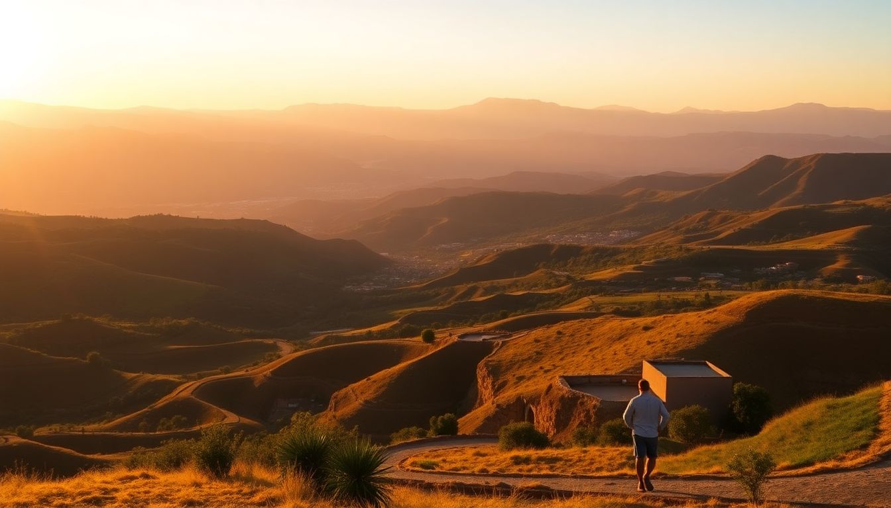

Best Day Trips from Cusco: Sacred Valley, Moray & Maras

I landed in Cusco at 3,400 meters and spent the first day just breathing. Once the altitude headache faded, I started planning day trips that didn’t require another week of acclimatization. The Sacred Valley, Moray, and Maras are the obvious trio—close enough to Cusco to do as long day trips, but spread out enough that you need a real plan. Here’s what worked for me, what didn’t, and how to avoid the bus crowds.
Why combine the Sacred Valley, Moray, and Maras in one day?
These three sites sit along a logical loop east of Cusco, and most tour operators bundle them for a reason. The Sacred Valley (the stretch from Pisac to Ollantaytambo) is the main attraction—Inca ruins, market towns, and terraced hillsides. Moray and Maras are smaller detours off the main valley road, each taking about an hour to see. Doing all three in one day is efficient if you start early and don’t linger too long at any single spot.
I booked a private driver through my hotel for $70 for the full day—split between four of us, that was cheaper than a group tour and gave us control over timing. Group buses from Cusco’s main square, Plaza de Armas, run around $20 per person and hit the same stops, but you’ll share the experience with 15 other travelers and stick to a fixed schedule.
How do you get to the Sacred Valley from Cusco?
The drive from Cusco to Pisac, the first major Sacred Valley town, takes about 45 minutes by car. You’ll wind through the hillside neighborhoods of San Blas and then drop into the valley—the altitude drops from 3,400 meters to about 2,900, which feels noticeably easier to breathe.
- Private driver: Hire from your hotel or a local agency in Cusco. Expect $60–$80 for a full day, including waiting time. We used a driver named Carlos from Apu Tours on Calle Procuradores—reliable, spoke decent English, and knew the back roads.
- Colectivo (shared van): Cheapest option at 10 soles per person from the terminal near Mercado San Pedro in Cusco. Vans leave when full, which can mean a 20-minute wait. You’ll get dropped at Pisac’s main square, then need to find another coletivo to Ollantaytambo.
- Group tour bus: Most hostels and agencies on Calle del Medio sell day tours for $20–$30. Includes guide, transport, and lunch. Downside: you’re on their clock.
I’d skip the group bus if you want to spend real time at the Pisac ruins—they rush you through in 45 minutes. We spent two hours hiking the terraces and still felt we could have stayed longer.
What should you see in the Sacred Valley?
The Sacred Valley isn’t one site—it’s a string of towns and ruins stretching 50 kilometers. You can’t do all of them in a day, so pick two or three.
- Pisac ruins and market: The ruins sit on a ridge above the town—buy your Boleto Turístico (130 soles, valid for 10 days across multiple sites) at the entrance. The Sunday market in Pisac’s plaza is famous but crowded; I found the weekday market (Tuesday and Thursday) more relaxed for buying textiles. Doña Clotilde at the market entrance sells the best empanadas de queso I had in Peru.
- Ollantaytambo: The fortress here is the most impressive Inca site in the valley—massive stone terraces that the Spanish never conquered. Arrive before 10 AM to beat the tour buses. The town itself is worth a walk: cobblestone streets and original Inca walls line Calle Principal.
- Chinchero: A smaller ruin and a weaving market. The textiles are cheaper than Pisac, but the quality varies. I bought a blanket from Tejidos Suna for 50 soles—good wool, natural dyes.
Skip Urubamba unless you need lunch. It’s a functional town with traffic. The tourist buffet restaurants there are overpriced and bland.
Are Moray and Maras worth the detour?
Yes, but manage expectations. Moray is a set of circular Inca terraces that look like an amphitheater—they were likely an agricultural experiment station for testing crops at different microclimates. Maras is a cluster of salt evaporation ponds that have been in use since pre-Inca times. Both are photogenic and quick to visit.
- Moray: The terraces are impressive from the overlook, but you can’t walk down into them (fenced off). Spend 30 minutes here. The Boleto Turístico covers entry.
- Maras: The salt ponds are privately owned by local families. Entry is 10 soles. You can walk the paths between the pools—bring sturdy shoes, the ground is uneven and salty. The best photos come from the upper path around 2 PM when the sun hits the white salt directly.
- Getting between them: Moray is 7 kilometers from Maras on a dirt road. Our driver handled it fine, but a standard sedan might struggle after rain. A tuk-tuk from the Maras turnoff costs 15 soles each way.
I’d prioritize Maras over Moray if you’re short on time. The salt ponds are more unique—you won’t see anything like them elsewhere in Peru. Moray is cool but feels like a quick photo stop.
When is the best time to do this day trip?
Dry season (May to September) is the obvious answer—blue skies, no rain, and the roads are in good shape. But it’s also the busiest. I went in late April, the tail end of rainy season, and had the Pisac ruins almost to myself until 11 AM.
- Start time: Leave Cusco by 7 AM. This puts you at Pisac by 7:45, before the group buses arrive around 9:30.
- Lunch timing: Eat a late lunch around 1:30 PM in Ollantaytambo, not in Urubamba. El Albergue Restaurant inside the Ollantaytambo train station serves a solid lomo saltado for 35 soles—not cheap by local standards, but the portions are huge.
- Return to Cusco: Aim to be back by 5 PM. The road from Ollantaytambo to Cusco gets dark early in the valley, and the last colectivos leave around 6 PM.
I made the mistake of stopping for a long lunch in Urubamba and hit traffic on the way back—what should have been a 90-minute drive took two and a half hours.
What should you pack for these day trips?
The altitude and sun are the real challenges. Cusco is high, but the valley is lower—you’ll still feel the UV rays.
- Sun protection: SPF 50 sunscreen and a wide-brim hat. I got burned on my neck at Moray because I forgot to reapply.
- Water: Bring at least 1.5 liters per person. The salt air at Maras dehydrates you faster than you expect.
- Cash: Most entry fees and market purchases require soles. The ATMs in Pisac and Ollantaytambo often run out on weekends. Withdraw enough in Cusco at Banco de la Nación on Plaza de Armas.
- Layers: Morning temps in Cusco can be 5°C (41°F), but by noon in the valley it hits 22°C (72°F). I wore a fleece over a T-shirt and tied it around my waist by lunchtime.
- Comfortable shoes: The paths at Pisac and Ollantaytambo involve uneven stone steps. I saw people in sandals struggling—don’t be that person.
FAQ
Can you visit Moray and Maras without a tour? Yes. Drive or take a colectivo from Cusco to the town of Maras (1 hour, 10 soles), then hire a tuk-tuk for the 20-minute ride to Moray and the salt ponds. The tuk-tuk driver will wait while you explore. Total cost: about 40 soles per person for transport and entry fees.
Is the Boleto Turístico worth buying for just one day? Only if you plan to enter multiple sites. The pass costs 130 soles and covers Pisac, Ollantaytambo, Chinchero, Moray, and several Cusco city ruins. If you only want Pisac and Ollantaytambo, buy individual tickets at each site (70 soles each). The pass saves money if you hit three or more sites.
How do you avoid altitude sickness on this day trip? The Sacred Valley is lower than Cusco, which helps. Drink coca tea in the morning, eat light meals, and skip alcohol the night before. I chewed coca leaves from a bag I bought at Mercado San Pedro—they taste bitter but worked for my headache. If you feel dizzy at Moray (3,500 meters), sit down and breathe slowly for five minutes before continuing.
Conclusion
- Start early (7 AM) to beat the bus crowds at Pisac and Ollantaytambo.
- Hire a private driver for flexibility—$70 split among a group beats a rushed tour bus.
- Prioritize Maras salt ponds over Moray if you have to choose one.
- Bring cash, sunscreen, and layers—the weather shifts fast in the valley.
- Eat lunch in Ollantaytambo at El Albergue instead of the tourist buffets in Urubamba.